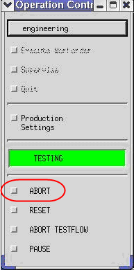
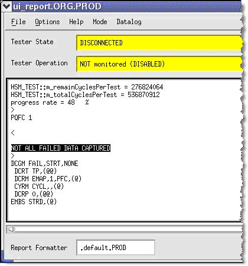

Break and Abort buttons
During testing you can stop the current testing if you click the Break button in the SmarTest main window:

You can also click the Abort button in the Operation Control window:

A warning message is displayed in the report window to show that not all fail data has been captured by the execution engine:
